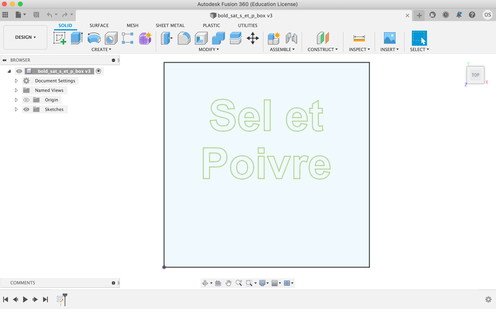
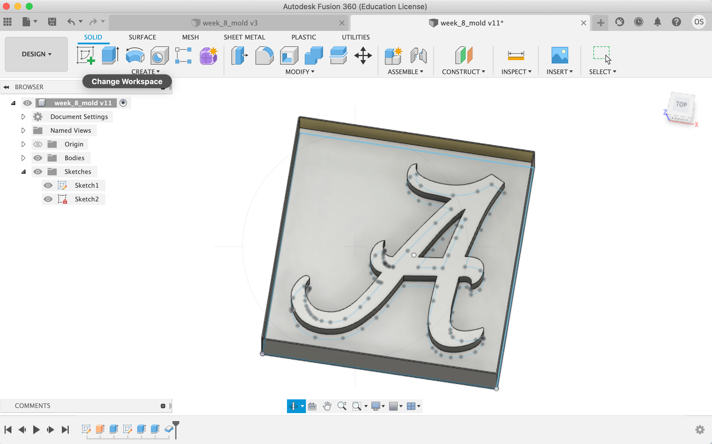

<div class="container-fluid">
<h1> Week 8: CNC Milling, Molding, and Casting </h1>
Last updated: April 4, 2022
<h4> Part 1: Milling something using the Shopbot </h4>
For a long time, I've been wanting to make a Salt and Pepper Box for my family. A lot of the work for this part of the assignment is in the [Week 7](./07_electronic_outputs/index.html) Part 4 section. Chris helped me a lot with learning how the Shopbot worked and seeing the importance of making substantially large letters so the Shopbot could operate on them. <br>
I'd had a lot of trouble with designing something in Fusion and having Aspire show that the Shopbot would cut out the text properly. Thankfully, Gabby helped me a ton during office hours and we figured out a way to engrave the text. The best way was to design the box in Fusion (we went with a 160mm x 160mm box, which worked much better than the 80mm x 80mm box I originally used because the text was too fine for the ShopBot to be able to cut properly!) and then exploded the text I put on the sketch of the box, selecting all of the text and clicking explode. Once those steps were done, I exported the file as a .dxf and imported into Fusion. <br>
Here is a picture of the sketch of my box in Fusion. Exploding the text allows the Shopbot to cut the letters. <br>

Thank you again to Gabby for helping me thruogh this process and [Joon's Aspire tutorial](https://nathanmelenbrink.github.io/ps70/07_cnc/Shopbot_Aspire.pdf) for helping with Aspire. Gabby explained that a good method for the letters would be to do a pocket cut rather than an outline cut. A pocket cut allowed me to cut a certain depth into the board and not all the way through. We set the depth for the pocket cuts at 4 mm, which allows us to see the letters, but have them be engraved rather than cut out. <br>
We did this by treating the outline and letters as separate layers and selecting an outline cut for the perimeter of the box and a pocket cut for the letters. <br>
Once the parameters were set in Aspire, we could begin the cut! I've included some videos: <br>
Here is the Shopbot milling the i (I've muted the video and I recommend keeping it that way because the noise is not pleasant!): <br>
<video width="720" height="480" controls muted>
<source src="drilling_the_i.mov" type="video/mp4">
</video>
<br>
<br>
Here is the Shopbot milling the p (Again, I've muted the video and I recommend keeping it that way because the noise is not pleasant!):
<video width="720" height="480" controls muted>
<source src="drilling_the_p.mov" type="video/mp4">
</video>
<br>
<br>
You can notice the various cuts that the drill goes through to engrave the letters, going a little bit deeper each time. The Shopbot does the same thing when cutting the perimeter of the box, going a little deeper with each cut around. And then, once everything was engraved, I could vacuum up all of the dust. I found this very satisfying and took a video to share here! <br>
<video width="720" height="480" controls muted>
<source src="vacuuming_video.mov" type="video/mp4">
</video>
<br>
<br>
Here is a photo of the final product. You can see how the top edge especially of the OSB didn't cut incredibly cleanly, and I sawed off some of those extra pieces to make the edge a little bit smoother. Additionally, the nature of the OSB makes seeing the engraved letters a little bit difficult, but I think they certainly serve their purpose for this week. A cool part of the [tutorial](https://www.youtube.com/watch?v=uURKCrErYSM&ab_channel=NEWTechCreative) I used to help me understand the idea of engraving used a flame to darken the color of the surface of the wood so that his letters came out clearer. I think that's something to think about for another version of this project for me—maybe buying some plywood with a nice finish so the engraved letters will come out nicely. I'd really love to make a Salt and Pepper box with higher quality plywood for my family, but didn't want to use nice (expensive) material for this test. The OSB doesn't look great, but taught me a ton about the process of using the CNC machine and helped give me a lot of confidence for using the machine to actually build the Salt and Pepper box hopefully later this semester. <br>
<img src="final_product_osb.png"
alt="Arduino Example Setup"
width="720" height="480">
<br>
<br>
<h4> Part 2: Molding and Casting </h4>
For this portion of the class, I wanted to make an outline of the Alabama Crimson Tide logo. I love college football, and Alabama has one of my favorite logos.
<h5> Part A: Fusion360: Tracing the Logo </h5>
First, [I found a logo for Alabama online](https://www.google.com/url?sa=i&url=https%3A%2F%2Fcommons.wikimedia.org%2Fwiki%2FFile%3AAlabama_Athletics_logo.svg&psig=AOvVaw1ntkqw8NGFZmjtYB24avV-&ust=1648523940422000&source=images&cd=vfe&ved=0CAsQjRxqFwoTCICDt7Hs5_YCFQAAAAAdAAAAABAD), and started tracing that in Fusion. I used the spline line drawing tool to trace the logo. [This video](https://www.youtube.com/watch?v=1KHvJqKFS1Q&ab_channel=LarsChristensen) helped me learn how to use the spline tool to trace a logo. One of the really cool things about using the spline tool was that the dots and lines usually seemed to sort of find their way onto match the logo really well. This was really cool, and I'm really pleased with how accurately the sketch came out. I highly recommend using that mehtod to trace things in Fusion. Here is a video of me tracing the Alabama logo in Fusion.
<video width="720" height="480" controls>
<source src="tracing_a_recording.mov" type="video/mp4">
</video>
<h5> Part B: Getting the Sketch Set to Mold in the SRM </h5>
Next came transferring the sketch from Fusion to mods.cba.mit.edu. I originally had just my logo in Fusion. However, Nathan and Ibrahim helped me understand the necessary progression of cutting in the SRM to molding to casting. Nathan helped me understand that it's best to go from positive to negative to positive, meaning that the sketch in Fusion is what we want in the end. The mold is then mirrored, and then the cast is what we want. Ibrahim helped me understand the importance of depth with the mold. So What I had was a deepest layer that served as the background, a middle layer which I extruded above that, and walls that were above everything that would give me the depth to pour silicone into the wax to create the mold. Here is the sketch in fusion with all of those components.
 <br>
<h5> Part C: Molding With the SRM </h5>
Next came the neat part of seeing how the mold came out with the SRM. The depth piece that I mentioned in Part B—and making the walls especially—took me a while to figure out and import correctly into mods.cba.mit.edu. Eventually, though, it worked! Ibrahim helped me set the parameters and laid the wax down using the double sided tape. Here is the setup page on the mods.cba.mit.edu website. <br>
<img src="mods.cba.mit.edu_page.png"
alt="Logo in Fusion"
width="720" height="480"> <br>
Then, once the origin was set and all the parameters were where were all good, we could start cutting. This took a really long time! I'm not 100% sure why, but the cutting process the first time took well over an hour—maybe that's normal, but I wasn't exactly sure. It is a funny feeling the first cut through (with the 1/16 bit) because there's so much wax that you can't see what's going on—but you can hope for the best! Here's a video of the first pass through.
<video width="720" height="480" controls>
<source src="cutting_first_time_through.mov" type="video/mp4">
</video> <br>
Again, though it's sort of impossible to see what's going on, the reveal was great! Here's a picture of the wax after that first cut through: <br>
<img src="wax_first_pass.png"
alt="Wax First Pass"
width="720" height="480"> <br>
Though the edges aren't totally clean, I think the "A" is very clear! But, to get an even more precice cut, I changed the bit from a 1/16 to 1/32 inch bit so the edges would be a little cleaner. This also meant changing the size of the bit on the [mods](mods.cba.mit.edu) website in the "mill raster 3D" box. A nice thing about this run throgh—though it still took quite a while—was that I could monitor the progress a little bit more. Here's a video of the SRM during the second pass through. You can see the raised "A" more clearly in this video (and can also notice how tiny the rows were that the SRM cut!): <br>
<video width="720" height="480" controls>
<source src="cutting_second_time_through.mov" type="video/mp4">
</video>
<h5> Part D: Casting With Silicone </h5>
*Note: I completed this part of the assignment on April 4, after the March 29 deadline.* <br>
Once the wax mold was all set, I casted the "A" logo with silicone, which would allow me to put other materials into that silicone and make the "A" logo. I mixed the silicone and poured it into the wax mold, letting it sit for about 24 hours. Here is a picture of the silicone mold (this is a picture from my first try). Next, I put silicone in silicone as the other picture shows. Turns out, that doesn't work too well! Silicone sticks to silicone. So, I did have to remake the silicone mold (the first picture), but the second attempt came out the same as the first.) <br>
In Part E below, I detail how the product eventually came out.
<img src="a_logo_silicone.png"
alt="Arduino Example Setup"
width="720" height="480">
<img src="silicone_on_silicone.png"
alt="Arduino Example Setup"
width="720" height="480"> <br>
^^^ I wouldn't recommend this! I think pouring silicone on silicone is a mistake you make once. :)
<h5> Part E: The Final Product </h5>
Nathan helped me understand that it would be cool to try using metal to make the "A," so I tried that the second time through. We heated up the metal in the oven (at about 450˚ for about 10 minutes) and then poured the hot metal into the silicone mold. ***One thing for people who use this is to make sure to wear gloves to take out the metal and eye protection when taking the metal out of the oven.*** As the picture below shows, it was a little tricky to have the metal come out perfectly, so the final product has some excess metal. Additionally, the surface of the A is a little bit coarse, but I think it's okay. Perhaps most importantly, the general outline of the "A" is clear. It makes a good paperweight or souvenir. <br>
<img src="a_logo_metal.png"
alt="Arduino Example Setup"
width="720" height="480">
<h5> Roll Tide! </h5> <br>
<!--
<video width="720" height="480" controls>
<source src="initial_controlling_brightness.mov" type="video/mp4">
</video>
<img src="a_logo_metal.png"
alt="Arduino Example Setup"
width="720" height="480">
-->
<h4> Helpful Links </h4>
This was the YouTube Tutorial I used heavily for my ShopBot object: https://www.youtube.com/watch?v=uURKCrErYSM&ab_channel=NEWTechCreative <br>
This is the link to the Alabama logo I used: https://www.google.com/url?sa=i&url=https%3A%2F%2Fcommons.wikimedia.org%2Fwiki%2FFile%3AAlabama_Athletics_logo.svg&psig=AOvVaw1ntkqw8NGFZmjtYB24avV-&ust=1648523940422000&source=images&cd=vfe&ved=0CAsQjRxqFwoTCICDt7Hs5_YCFQAAAAAdAAAAABAD <br>
This website helped me remove the image of what I traced: https://www.reddit.com/r/Fusion360/comments/jf5326/how_do_i_remove_background_pictures/ <br>
Helped me remove a tracing of an image that I’d mirrored: https://knowledge.autodesk.com/support/fusion-360/troubleshooting/caas/sfdcarticles/sfdcarticles/How-to-delete-bodies-after-mirroring-them-in-Fusion-360.html <br>
Helped me trace the logo of an emblem: https://www.youtube.com/watch?v=1KHvJqKFS1Q&ab_channel=LarsChristensen <br>
Helped me mute a video: https://www.w3schools.com/tags/att_video_muted.asp <br>
Made a GIF for my home page for this week: https://makeagif.com/ <br>
This website helped me remove the image of what I traced: https://www.reddit.com/r/Fusion360/comments/jf5326/how_do_i_remove_background_pictures/ <br>
Helped me remove a tracing of an image that I’d mirrored: https://knowledge.autodesk.com/support/fusion-360/troubleshooting/caas/sfdcarticles/sfdcarticles/How-to-delete-bodies-after-mirroring-them-in-Fusion-360.html<br>
Helped me trace the logo of an emblem: https://www.youtube.com/watch?v=1KHvJqKFS1Q&ab_channel=LarsChristensen<br>
Link to the mods website: https://mods.cba.mit.edu/
<h4> Final Notes </h4>
Thank you so much to the teaching staff for their help with this project! <br>